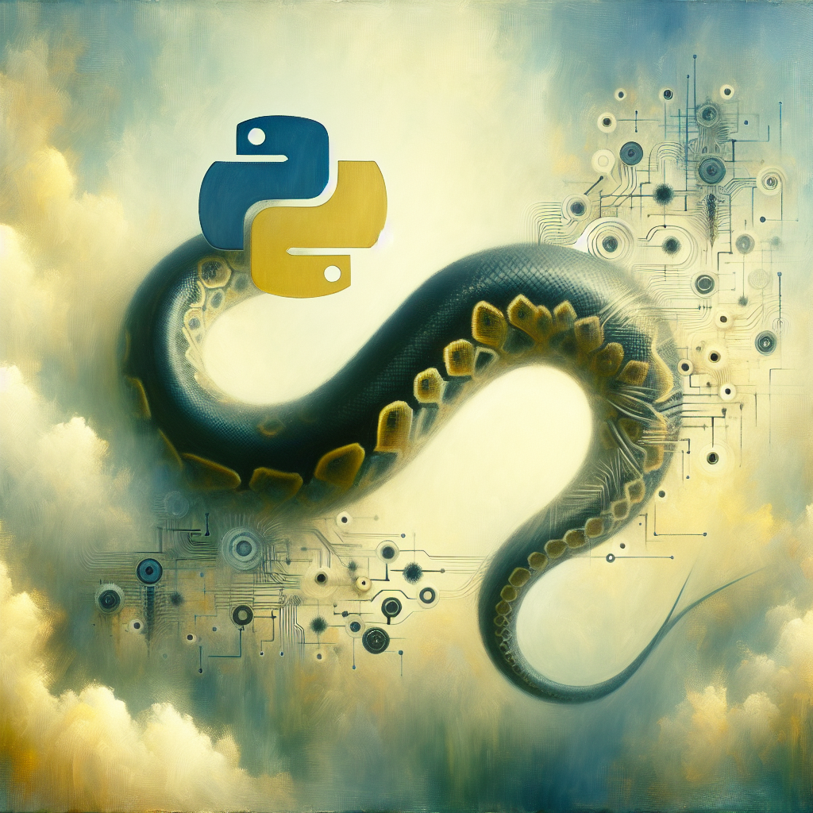

The Future of Python and AI
The world of technology is constantly evolving and one of the most exciting areas of development is artificial intelligence (AI). As a coding enthusiast and a Python lover, I have been closely following the advancements in AI and its implementation using Python. In this blog post, I want to share my thoughts on what the future of Python and AI could look like.
Python has become one of the most popular programming languages in recent years, with its easy-to-learn syntax and powerful libraries. It has been widely used in various fields, including data science, web development, and of course, AI. With its readability and versatility, Python has become the go-to language for many AI developers.
But what does the future hold for Python and AI? In my opinion, the possibilities are endless. With the increasing amount of data being generated every day, AI will become more and more essential in making sense of it all. And with its strong data handling capabilities, Python will continue to play a crucial role in AI development.
One of the most exciting areas where Python and AI could make a huge impact is in the field of machine learning (ML). ML is a subset of AI that focuses on creating algorithms that can learn from data and make predictions or decisions. Python's powerful libraries such as TensorFlow, PyTorch, and Keras have made it easier for developers to build and train ML models. And with the continuous advancements in ML techniques, we can expect to see more sophisticated and accurate models being developed using Python.
Another area where Python and AI could revolutionize is natural language processing (NLP). NLP is a branch of AI that deals with the interaction between computers and human languages. With the increasing demand for chatbots and virtual assistants, NLP is becoming more and more important. And once again, Python has proven to be a powerful tool for NLP tasks, with libraries like NLTK and SpaCy.
Apart from these, Python and AI could also impact various other fields such as robotics, healthcare, finance, and transportation. With its wide range of applications and its compatibility with AI, Python is well-positioned to be at the forefront of the AI revolution.
However, with great power comes great responsibility. As AI continues to advance, ethical concerns and potential job displacement must be carefully addressed. As developers, it is our responsibility to ensure that AI is used for the betterment of society and not for harm.
In conclusion, the future of Python and AI looks bright and promising. With its user-friendly syntax, powerful libraries, and its compatibility with AI, Python is